This section will take you through the features of the Schedule control. The features of the Schedule control are listed below:
Schedule Mode - Essential Schedule, schedules appointments in two different layouts : Vertical and Horizontal Modes.
Figure 68: ScheduleMode – Vertical
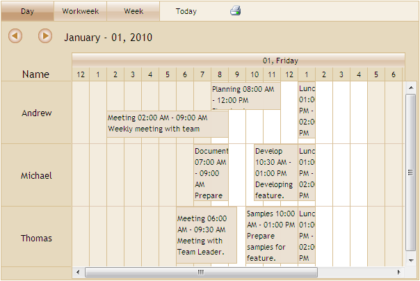
Figure 69: ScheduleMode – Horizontal
View Types - Essential Schedule displays appointments in four different view types: Day, Week, Workweek and Month.
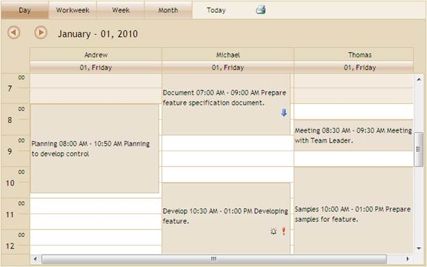
Figure 70: ViewType – Day
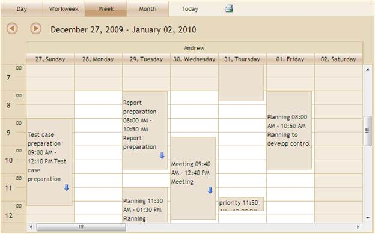
Figure 71: ViewType – Week
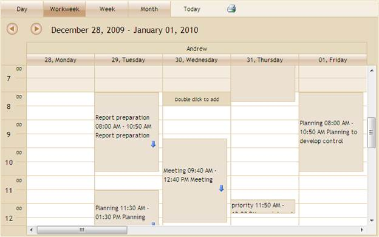
Figure 72: ViewType – Workweek
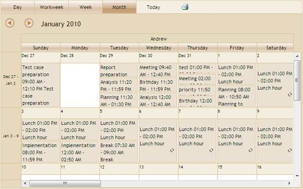
Figure 73: ViewType – Month
Appointments - End-user events are called Appointments. Appointments can be added, edited, and deleted in Essential Schedule.
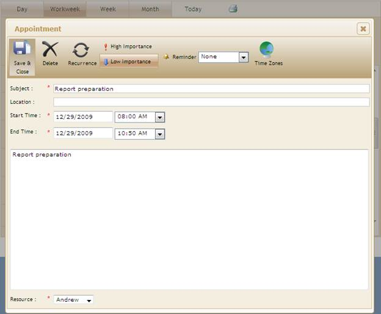
Figure 74: CRUD Appointments
Resizing Appointments - Appointment timings can be extended or changed by resizing them. The appointment is resized by holding the corners of the appointment.
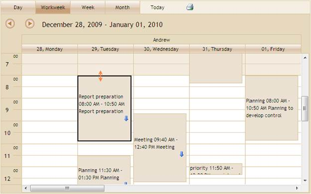
Figure 75: Resizing Appointment
Drag Appointments-The user can drag appointments from one location to another location within the Schedule control. You can also drag appointments between resources.
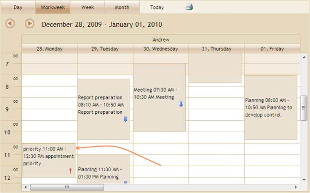
Figure 76: Dragging Appointment
Priority: Schedule control supports setting the priority level for appointments to indicate the important levels of appointments.
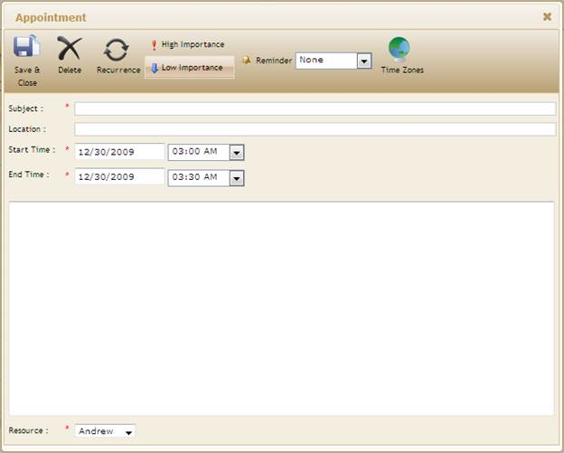
Figure 77: Priority
Reminder: Essential Schedule provides an option to set or remove reminder for appointments.
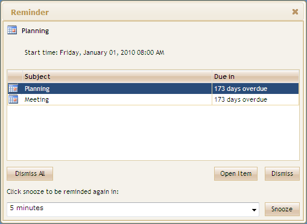
Figure 78: Reminder
Recurrence: Essential Schedule makes the appointment recurring with recurrence frequency (Daily, Weekly, Monthly, and Yearly).
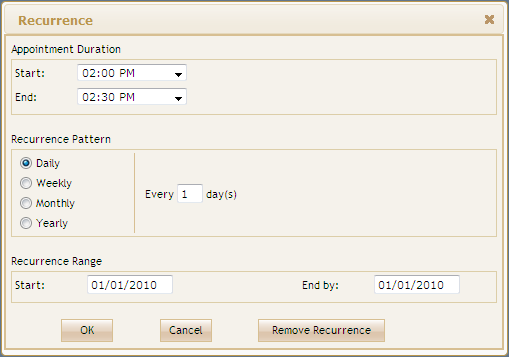
Figure 79: Recurrence
The print icon image is displayed on the Schedule at viewstrip toolbar by enabling the ShowPrint property. By default, Essential Schedule prints the day, week, workweek, and month. You can print individual appointments by using the context menu.
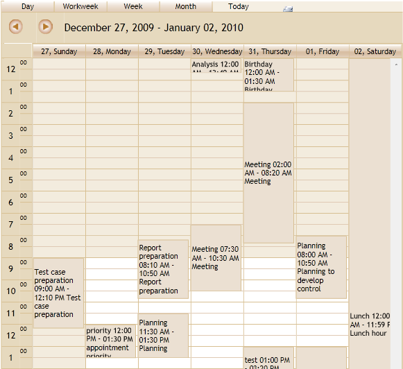
Figure 80: Print a Schedule
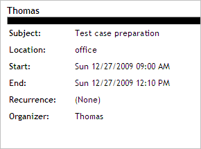
Figure 81: Print an Appointment
TimeZone
Schedule appointment items’ start and end times are saved in the Coordinated Universal Time (UTC) format, an international time standard that is similar to Greenwich Mean Time.
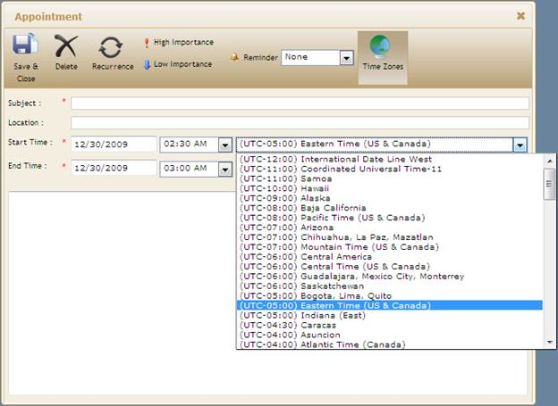
Figure 82: TimeZone
Essential Schedule allows two types of Time modes to display time line header and appointment timings:
· 12 Hours - Display appointments with 12 hours format
· 24 Hours -
Display appointments with 24 hours format
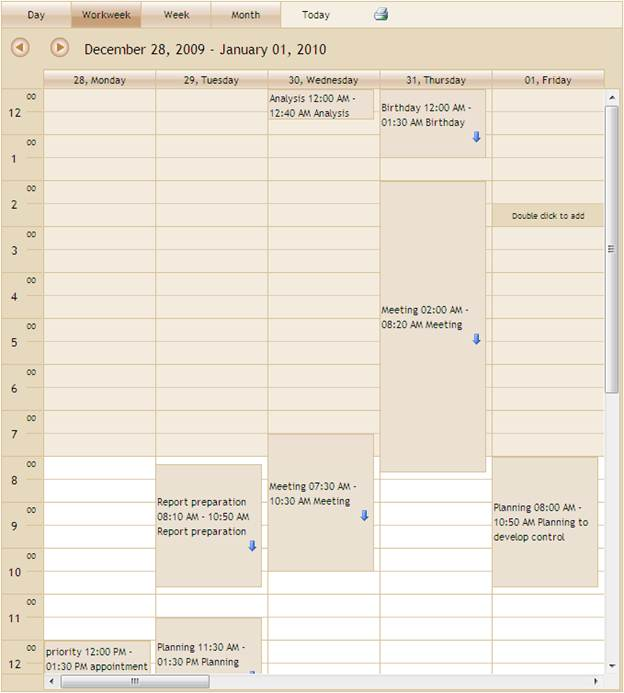
Figure 83: TimeMode - Hours12
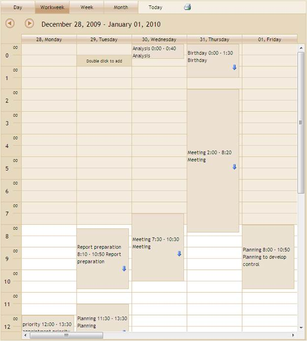
Figure 84: TimeMode - Hours24
Essential Schedule allows you to add multiple resources to the control. You can assign appointments to each resource. Resource header will help you to view the appointments for each resource with a resource name as the header.
Figure 85: Multiple Resources
Essential Schedule offers calendar navigation for quick navigation Schedule. The ShowNaviagationPane property is used to enable the calendar in the Navigation pane.
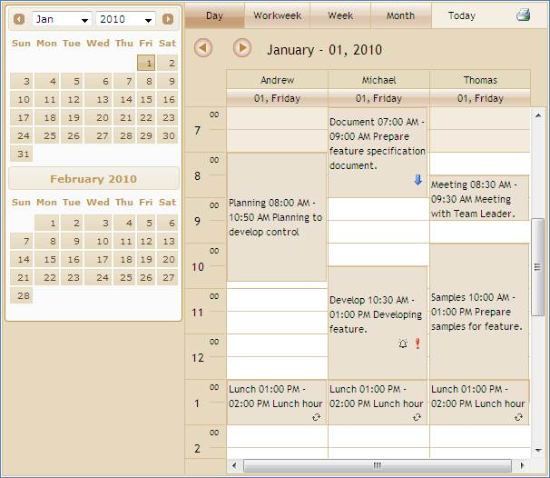
Figure 86: Calendar Navigation
Schedule handles client-side scripting on appointment selection and cell double-click. OnAppointmentSelection event is raised every time when the end-user selects the appointment. OnCellDoubleClick event is raised every time when the end user double-clicks the cell. The end user can customize the appointment window using these client side scripting.
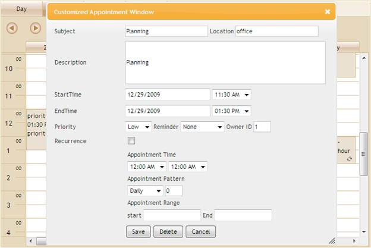
Figure 87: Customized appointment window using Clientside Events
This feature allows you to display menus on right-clicking the Schedule control cell and appointment in order to add, edit, delete, and print an appointment. It also provides options to add custom menu items.
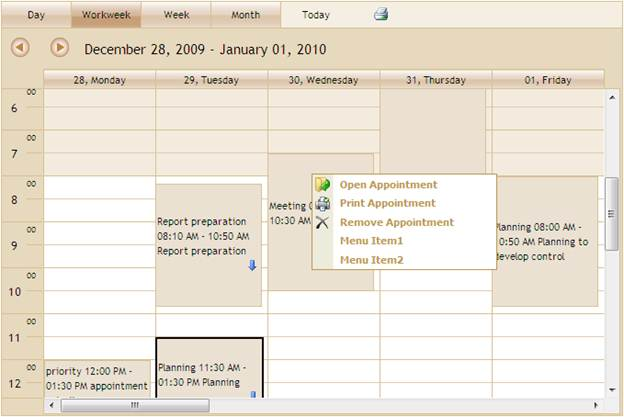
Figure 88: Appointment Context Menu
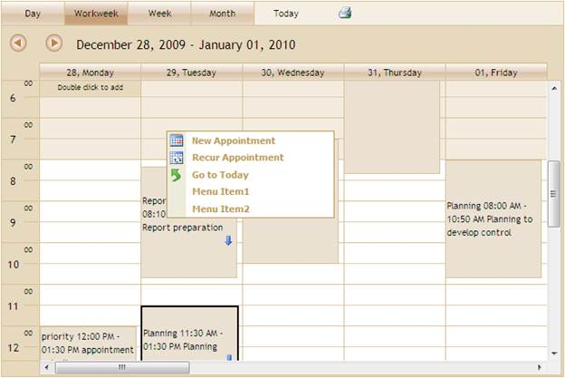
Figure 89: Cell Context Menu
Essential Schedule has several built-in skins that make styling extremely easy. Essential Schedule contains 14 built-in skins to easily customize the appearance. Essential Schedule's Skin property allows you to apply predefined skins to the control.
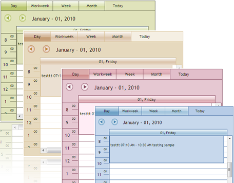
Figure 90: Schedule Skins